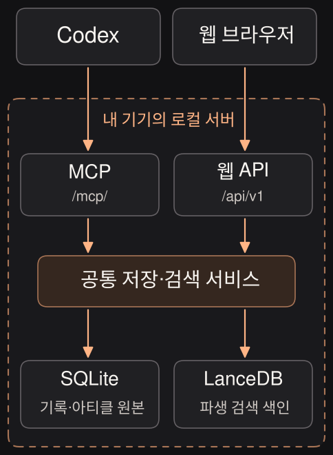
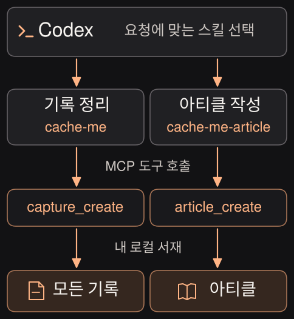
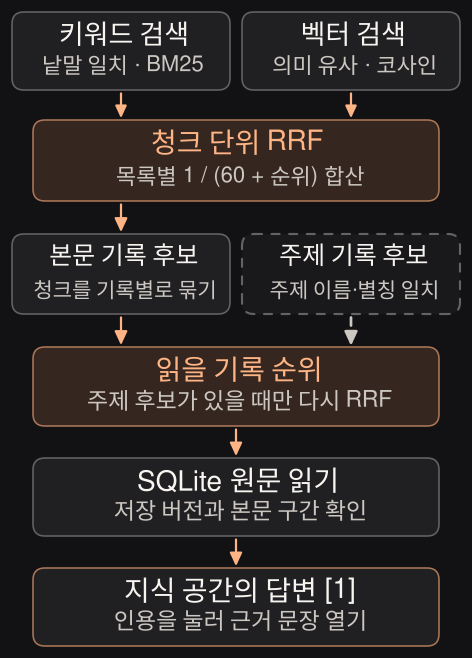

아키텍처 개요
Codex와 웹은 같은 로컬 서버를 사용합니다. 원문은 SQLite에, 검색 색인은 LanceDB에 보관합니다.

두 입구, 하나의 로컬 서재
Codex에서 저장한 기록을 웹에서 곧바로 열 수 있는 것은 두 경로가 같은 기록 서비스를 사용하기 때문입니다.
- 진입점
- Codex는 MCP 도구를 호출하고, 웹 브라우저는 웹 API에 요청합니다.
- 원본
- SQLite에 기록과 아티클, 각 버전과 출처가 남습니다.
- 검색 색인
- LanceDB는 원문에서 만든 검색용 구간을 보관합니다.

스킬에서 저장 도구까지
“배운 걸 정리해줘”와 “이 기록들로 글 써줘”는 서로 다른 결과를 만듭니다. 스킬은 Codex가 따르는 작업 지침이고, MCP는 서버의 도구를 호출하는 규약입니다.
- 기록 저장
cache-me가 본문과 주제 힌트를 보내면 서버가 본문을 먼저 저장합니다. 기존 주제 재사용과 새 주제 등록은 이어지는 주제 분류 단계에서 결정합니다.- 글 발행
cache-me-article로 근거를 읽고article_create로 인용을 갖춘 별도 글을 발행합니다.

검색 후보에서 답변 근거까지
질문과 가까운 구간을 찾은 뒤, 서버가 실제로 읽은 저장본의 문장을 답변과 연결합니다.
- 검색
- 단어와 의미로 찾은 본문 조각의 순위를 RRF로 합쳐 기록별로 묶습니다.
- 주제 연결
- 일치하는 주제 후보가 있으면 기록 단위에서 순위를 한 번 더 합칩니다.
- 인용
- 읽은 기록의 버전과 구간을 확인해 답변의 출처 번호에서 열 수 있게 합니다.